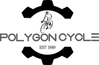

POLYGON

ARTI SEBUAH NAMA. Pada logo diatas menggunakan gambar orang bersepeda dan terdapat gambar gear yang arti atau maknanya PT. Insera Sena perusahaan yang memproduksi sepeda sedangkan gambar gear artinya perusahaan ini dapat terus bergerak memproduksi sepeda dan berinovasi lebih baik lagi. Untuk pemilihan warna, Warna Hitam : Bermakna tegas, solid dan kuat sedangkan Warna Abu-abu : Berkesan elegan/mewah.
KAMI PESEPEDA. Secara umum, tim desain dan tim produk kami adalah para pengendara sepeda. Pengetahuan mereka tentang material dan desain sepeda dikombinasikan dengan pengalaman yang hanya bisa didapatkan dari atas sepeda untuk mencipatakan pemahamanan yang mendalam untuk menciptakan produk sepeda terbaik. Gairah tersebut yang selalu mengalir melalui semua orang di Polygon. Kami selalu menginginkan Sepeda Polygon Anda menjadi sepeda terbaik yang pernah Anda gunakan. Inilah sesungguhnya tujuan hidup Kami.
KAMI MENDUNIA. Saat ini, Polygon telah dikenal luas di kawasan Asia dan akan terus melebarkan sayap ke kawasan lain di seluruh dunia. Bagian kesuksesan ini sangat terkait dengan tim desain dan pengembangan kami secara global. Tim kami yang beragam dari para teknisi dan tim kreatif yang berbasis di Amerika Utara, Eropa, dan Asia ini memastikan bahwa desain kami selalu segar dan memiliki keterkaitan secara global. Selain itu fasilitas pabrik dan perakitan yang telah memenuhi standar dunia, berada di Asia Tenggara. Desain global yang berpadu dengan manufaktur kelas dunia ini telah menarik perhatian melalui para atlet dunia, seperti Tim Downhill kelas dunia Hutchinson UR Team yang bertanding menggunakan Sepeda Polygon di UCI DH World Cup 2013.
KAMI TEPERCAYA. Kami memiliki pabrik, perakitan, dan jaringan pendistribusian sendiri. Ini artinya kami terus mengontrol setiap aspek dari ide awal hingga ke pengiriman akhir. Mengapa semua itu menjadi hal yang penting? Karena kita tahu, setiap Sepeda Polygon adalah dibuat dengan kualitas tinggi, dirakit dengan teliti untuk kesempurnaan sebuah Sepeda. Sederhananya, kualitas adalah mutlak dan kami semua berdiri dibelakang semua yang kami buat.
KAMI PESEPEDA. Secara umum, tim desain dan tim produk kami adalah para pengendara sepeda. Pengetahuan mereka tentang material dan desain sepeda dikombinasikan dengan pengalaman yang hanya bisa didapatkan dari atas sepeda untuk mencipatakan pemahamanan yang mendalam untuk menciptakan produk sepeda terbaik. Gairah tersebut yang selalu mengalir melalui semua orang di Polygon. Kami selalu menginginkan Sepeda Polygon Anda menjadi sepeda terbaik yang pernah Anda gunakan. Inilah sesungguhnya tujuan hidup Kami.
KAMI MENDUNIA. Saat ini, Polygon telah dikenal luas di kawasan Asia dan akan terus melebarkan sayap ke kawasan lain di seluruh dunia. Bagian kesuksesan ini sangat terkait dengan tim desain dan pengembangan kami secara global. Tim kami yang beragam dari para teknisi dan tim kreatif yang berbasis di Amerika Utara, Eropa, dan Asia ini memastikan bahwa desain kami selalu segar dan memiliki keterkaitan secara global. Selain itu fasilitas pabrik dan perakitan yang telah memenuhi standar dunia, berada di Asia Tenggara. Desain global yang berpadu dengan manufaktur kelas dunia ini telah menarik perhatian melalui para atlet dunia, seperti Tim Downhill kelas dunia Hutchinson UR Team yang bertanding menggunakan Sepeda Polygon di UCI DH World Cup 2013.
KAMI TEPERCAYA. Kami memiliki pabrik, perakitan, dan jaringan pendistribusian sendiri. Ini artinya kami terus mengontrol setiap aspek dari ide awal hingga ke pengiriman akhir. Mengapa semua itu menjadi hal yang penting? Karena kita tahu, setiap Sepeda Polygon adalah dibuat dengan kualitas tinggi, dirakit dengan teliti untuk kesempurnaan sebuah Sepeda. Sederhananya, kualitas adalah mutlak dan kami semua berdiri dibelakang semua yang kami buat.